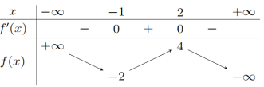
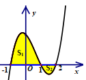
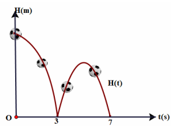
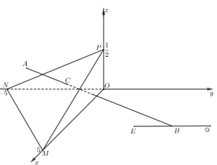
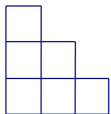
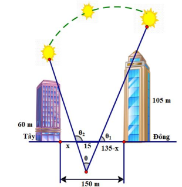
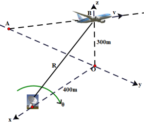
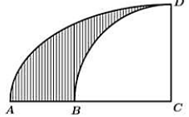

ĐỀ THI TOÁN - ĐỀ SỐ 40 HOT
Phần I: Trắc Nghiệm Nhiều Lựa Chọn
Tóm tắt kiến thức: Thể tích khối tròn xoay
Thể tích khối tròn xoay tạo thành khi quay miền phẳng \( D \) quanh trục \( Ox \): \( V = \pi \int_a^b [f(x)]^2 \, dx \), trong đó \( f(x) \) là hàm xác định ranh giới miền \( D \).
Câu 1:
Gọi \( D \) là hình phẳng giới hạn bởi các đường \( y = e^{2x} \), \( y = 0 \), \( x = 0 \), \( x = 1 \). Thể tích của khối tròn xoay tạo thành khi quay \( D \) quanh trục \( Ox \) bằng:
Chọn đáp án:
Lời giải:
Thể tích khối tròn xoay: \( V = \pi \int_0^1 (e^{2x})^2 \, dx = \pi \int_0^1 e^{4x} \, dx \).
Đáp án: A.
Tóm tắt kiến thức: Tính đơn điệu của hàm số
Hàm số \( y = f(x) \) đồng biến trên khoảng \( (a; b) \) nếu \( f'(x) \geq 0 \), nghịch biến nếu \( f'(x) \leq 0 \). Bảng biến thiên cho biết dấu của \( f'(x) \), từ đó xác định các khoảng đồng biến/nghịch biến.
Câu 2:
Cho hàm số \( y = f(x) \) xác định trên \( \mathbb{R} \) và có bảng biến thiên như sau:

Hàm số \( y = f(x) \) đồng biến trên khoảng nào?
Chọn đáp án:
Lời giải:
Từ bảng biến thiên, hàm số đồng biến trên khoảng \( (-1; 2) \).
Đáp án: D.
Tóm tắt kiến thức: Vector chỉ phương của đường thẳng
Vector chỉ phương của đường thẳng \( \left\{ \begin{array}{l} x = x_0 + at \\ y = y_0 + bt \\ z = z_0 + ct \end{array} \right. \) là \( \vec{u} = (a; b; c) \).
Câu 3:
Trong không gian \( Oxyz \), đường thẳng \( d: \left\{ \begin{array}{l} x = 2 - t \\ y = 1 + 2t \\ z = 3 + t \end{array} \right. \) có một vector chỉ phương là:
Chọn đáp án:
Lời giải:
Phương trình đường thẳng \( x = 2 - t \), \( y = 1 + 2t \), \( z = 3 + t \) có vector chỉ phương là \( \vec{u} = (-1; 2; 1) \).
Đáp án: A.
Tóm tắt kiến thức: Tiệm cận ngang
Hàm số \( y = \frac{ax + b}{cx + d} \) có tiệm cận ngang \( y = \frac{a}{c} \) nếu \( c \neq 0 \).
Câu 4:
Tiệm cận ngang của đồ thị hàm số \( y = \frac{3x - 4}{-x + 2} \) là đường thẳng có phương trình:
Chọn đáp án:
Lời giải:
Hàm số \( y = \frac{3x - 4}{-x + 2} = \frac{3x - 4}{-(x - 2)} \). Khi \( x \to \pm \infty \), \( y \to \frac{3}{-1} = -3 \). Vậy tiệm cận ngang là \( y = -3 \).
Đáp án: D.
Tóm tắt kiến thức: Tâm mặt cầu
Mặt cầu có phương trình \( (x - a)^2 + (y - b)^2 + (z - c)^2 = R^2 \) có tâm tại \( (a; b; c) \).
Câu 5:
Trong không gian \( Oxyz \), tâm mặt cầu \( (x - 1)^2 + (y + 2)^2 + (z - 3)^2 = 9 \) có tọa độ là:
Chọn đáp án:
Lời giải:
Phương trình mặt cầu \( (x - 1)^2 + (y + 2)^2 + (z - 3)^2 = 9 \) có tâm tại \( (1; -2; 3) \).
Đáp án: A.
Tóm tắt kiến thức: Độ lệch chuẩn
Độ lệch chuẩn của mẫu số liệu ghép nhóm:
- Trung bình: \( \bar{x} = \frac{\sum x_i n_i}{\sum n_i} \).
- Phương sai: \( S^2 = \frac{1}{n} \sum n_i x_i^2 - \bar{x}^2 \).
- Độ lệch chuẩn: \( S = \sqrt{S^2} \).
Câu 6:
Thời gian chạy tập luyện cự li 100 m của hai vận động viên được cho trong bảng sau:

| Thời gian (giây) | \([10; 10,3)\) | \([10,3; 10,6)\) | \([10,6; 10,9)\) | \([10,9; 11,2)\) |
|---|---|---|---|---|
| Giá trị đại diện | 10,15 | 10,45 | 10,75 | 11,05 |
| Số lần chạy của A | 2 | 10 | 5 | 3 |
| Số lần chạy của B | 3 | 7 | 9 | 6 |
Chọn đáp án:
Lời giải:
Vận động viên A:
Trung bình: \( \bar{x}_A = \frac{10,15 \cdot 2 + 10,45 \cdot 10 + 10,75 \cdot 5 + 11,05 \cdot 3}{20} = \frac{2117}{200} \).
Phương sai: \( s_A^2 = \frac{1}{20} (10,15^2 \cdot 2 + 10,45^2 \cdot 10 + 10,75^2 \cdot 5 + 11,05^2 \cdot 3) - \left(\frac{2117}{200}\right)^2 = \frac{2691}{40000} \).
Độ lệch chuẩn: \( s_A = \sqrt{\frac{2691}{40000}} \approx 0,26 \).
Vận động viên B:
Trung bình: \( \bar{x}_B = \frac{10,15 \cdot 3 + 10,45 \cdot 7 + 10,75 \cdot 9 + 11,05 \cdot 6}{25} = \frac{5333}{500} \).
Phương sai: \( s_B^2 = \frac{1}{25} (10,15^2 \cdot 3 + 10,45^2 \cdot 7 + 10,75^2 \cdot 9 + 11,05^2 \cdot 6) - \left(\frac{5333}{500}\right)^2 = \frac{1296}{15625} \).
Độ lệch chuẩn: \( s_B = \sqrt{\frac{1296}{15625}} \approx 0,288 \).
Vì \( s_A < s_B \), đáp án đúng là C.
Tóm tắt kiến thức: Tích phân xác định
Giá trị tích phân \( \int_a^b f(x) \, dx \) biểu thị diện tích có dấu của miền giới hạn bởi đồ thị \( y = f(x) \), trục hoành, và các đường \( x = a \), \( x = b \). Nếu \( f(x) \geq 0 \), tích phân bằng diện tích; nếu \( f(x) \leq 0 \), tích phân bằng diện tích âm.
Câu 7:
Cho đồ thị của hàm số \( y = f(x) \) như hình vẽ và diện tích hai phần tô đậm lần lượt là \( S_1 = 10 \) và \( S_2 = 3 \):

Giá trị của \( \int_{-1}^2 f(x) \, dx \) bằng:
Chọn đáp án:
Lời giải:
Với \( S_1 = 10 \), ta có \( \int_{-1}^1 f(x) \, dx = 10 \) (vì \( f(x) \geq 0 \) trên \([-1; 1]\)).
Với \( S_2 = 3 \), ta có \( \int_1^2 f(x) \, dx = -3 \) (vì \( f(x) \leq 0 \) trên \([1; 2]\)).
Vậy: \( \int_{-1}^2 f(x) \, dx = \int_{-1}^1 f(x) \, dx + \int_1^2 f(x) \, dx = 10 - 3 = 7 \).
Đáp án: A.
Tóm tắt kiến thức: Vector trong hình hộp
Trong hình hộp \( ABCD.EFGH \), vector \( \vec{AG} \) có thể được biểu diễn thông qua các vector cạnh như \( \vec{AG} = \vec{AB} + \vec{AD} + \vec{DH} \).
Câu 8:
Cho hình hộp \( ABCD.EFGH \). Khẳng định nào dưới đây là khẳng định đúng?
Chọn đáp án:
Lời giải:
Trong hình hộp, ta có \( \vec{AG} = \vec{AB} + \vec{AD} + \vec{DH} \). Xét các vector:
- \( \vec{EG} = \vec{EH} + \vec{HG} \), \( \vec{DH} = -\vec{EH} \), nên \( \vec{EG} + \vec{DH} = \vec{HG} = \vec{AG} \).
Các lựa chọn khác không thỏa mãn.
Đáp án: C.
Tóm tắt kiến thức: Thể tích hình chóp
Thể tích hình chóp: \( V = \frac{1}{3} S_{\text{đáy}} \cdot h \), trong đó \( S_{\text{đáy}} \) là diện tích đáy, \( h \) là chiều cao.
Câu 9:
Cho hình chóp \( S.ABCD \) có đáy \( ABCD \) là hình vuông cạnh \( a \) và \( SA \perp (ABCD) \), \( \angle SBA = 60^\circ \). Thể tích khối chóp \( S.ABCD \) bằng:
Chọn đáp án:
Lời giải:
Vì \( \angle SBA = 60^\circ \), ta có \( \tan 60^\circ = \frac{SA}{AB} \Rightarrow SA = a \sqrt{3} \).
Diện tích đáy: \( S_{ABCD} = a^2 \).
Thể tích: \( V = \frac{1}{3} S_{ABCD} \cdot SA = \frac{1}{3} a^2 \cdot a \sqrt{3} = \frac{\sqrt{3}}{3} a^3 \).
Đáp án: B.
Tóm tắt kiến thức: Cấp số nhân
Cấp số nhân có công bội \( q = \frac{u_{n+1}}{u_n} \).
Câu 10:
Cho cấp số nhân \( (u_n) \) có \( u_2 = 2 \), \( u_3 = 6 \). Công bội \( q \) của cấp số nhân là:
Chọn đáp án:
Lời giải:
Công bội: \( q = \frac{u_3}{u_2} = \frac{6}{2} = 3 \).
Đáp án: A.
Tóm tắt kiến thức: Phương trình lũy thừa
Phương trình \( a^{f(x)} = a^g \Rightarrow f(x) = g \) (nếu \( a > 0 \), \( a \neq 1 \)).
Câu 11:
Nghiệm phương trình \( 2^{x+1} = 16 \) là:
Chọn đáp án:
Lời giải:
Ta có \( 2^{x+1} = 16 = 2^4 \Rightarrow x + 1 = 4 \Rightarrow x = 3 \).
Đáp án: C.
Tóm tắt kiến thức: Bất phương trình logarit
Cho \( 0 < a < 1 \), bất phương trình \( \log_a f(x) \geq \log_a g(x) \Leftrightarrow f(x) \leq g(x) \) (với điều kiện \( f(x) > 0 \), \( g(x) > 0 \)).
Câu 12:
Tập nghiệm của bất phương trình \( \log_{0,3}(4x - 3) \geq \log_{0,3}(3x + 1) \) là:
Chọn đáp án:
Lời giải:
Điều kiện: \( 4x - 3 > 0 \Rightarrow x > \frac{3}{4} \), \( 3x + 1 > 0 \Rightarrow x > -\frac{1}{3} \).
Vì \( 0 < 0,3 < 1 \), ta có \( \log_{0,3}(4x - 3) \geq \log_{0,3}(3x + 1) \Leftrightarrow 4x - 3 \leq 3x + 1 \Leftrightarrow x \leq 4 \).
Kết hợp điều kiện: \( x \in \left( \frac{3}{4}; 4 \right] \).
Đáp án: D.
Phần II: Trắc Nghiệm Đúng/Sai
Tóm tắt kiến thức: Hàm số liên tục và tối ưu hóa
- Hàm số liên tục tại \( x = a \) nếu \( \lim_{x \to a} f(x) = f(a) \).
- Để tìm cực trị của hàm \( f(x) \): Lấy \( f'(x) = 0 \), kiểm tra dấu \( f'(x) \) hoặc \( f''(x) \).
Câu 13:
Khi thả một quả bóng từ đỉnh một tòa tháp xuống, nó chạm đất sau 3 giây. Sau đó, quả bóng nảy lên trước khi chạm đất lần nữa 4 giây sau đó. Chiều cao tính bằng mét của quả bóng so với mặt đất sau \( t \) giây tuân theo một hàm số liên tục trên \([0; 7]\) như sau:

\[
H(t) = \begin{cases}
-5t^2 + c & \text{khi } 0 \leq t < 3 \\
-5t^2 + dt + e & \text{khi } 3 \leq t \leq 7
\end{cases} \quad (c, d, e \in \mathbb{R})
\]
Xét các phát biểu sau:
Chọn đáp án cho từng phát biểu:
a)
b)
c)
d)
Lời giải:
a) Đúng. Từ hình vẽ, \( H(3) = H(7) = 0 \).
b) Sai. Vì hàm liên tục tại \( t = 3 \), ta có \( -5 \cdot 3^2 + c = 0 \Rightarrow c = 45 \). Vậy \( H(0) = 45 \), quả bóng được thả từ độ cao \( 45 \, \text{m} \), không phải \( 40 \, \text{m} \).
c) Sai. Từ \( H(3) = 0 \), \( H(7) = 0 \), ta có hệ: \( \begin{cases} -5 \cdot 3^2 + 3d + e = 0 \\ -5 \cdot 7^2 + 7d + e = 0 \end{cases} \Rightarrow \begin{cases} d = 50 \\ e = -105 \end{cases} \). Vậy \( d = 50 \), không phải \( 100 \).
d) Đúng. Xét \( H(t) = -5t^2 + 50t - 105 \) trên \([3; 7]\). Đạo hàm: \( H'(t) = -10t + 50 = 0 \Rightarrow t = 5 \). Tại \( t = 5 \), \( H(5) = 20 \). Kiểm tra: \( H(3) = H(7) = 0 \), nên \( H(5) = 20 \) là cực đại, tức độ cao lớn nhất là \( 20 \, \text{m} \).
Đáp án: a) Đúng, b) Sai, c) Sai, d) Đúng.
Tóm tắt kiến thức: Đường cong Lorenz và tích phân
- Đường cong Lorenz mô tả sự phân phối thu nhập, với hàm \( y = f(x) \) cho tỷ lệ thu nhập tích lũy của \( x\% \) dân số nghèo nhất.
- Sự bất bình đẳng thu nhập được đo bằng diện tích giữa đường cong Lorenz và đường \( y = x \).
Câu 14:
Các nhà kinh tế sử dụng đường cong Lorenz để minh họa sự phân phối thu nhập trong một quốc gia, với hàm:
\( y = (0,00061 x^2 + 0,0218 x + 1,723)^2, \, 0 \leq x \leq 100 \).
Trong đó \( x \) được tính từ nghèo nhất đến giàu nhất. Xét các phát biểu sau:
Chọn đáp án cho từng phát biểu:
a)
b)
c)
d)
Lời giải:
a) Đúng. Tổng thu nhập của \( 60\% \) gia đình đầu tiên là \( f(60) = (0,00061 \cdot 60^2 + 0,0218 \cdot 60 + 1,723)^2 \approx 27,321529\% \).
b) Sai. Tổng thu nhập của nhóm 3 (từ \( 20\% \) đến \( 30\% \)): \( f(30) - f(20) = 8,561476\% - 5,774409\% \approx 2,787067\% \), không phải \( 8,56\% \).
c) Sai. Sự bất bình đẳng là diện tích giữa \( y = x \) và \( y = (0,00061 x^2 + 0,0218 x + 1,723)^2 \): \( S = \int_0^{100} \left| (0,00061 x^2 + 0,0218 x + 1,723)^2 - x \right| \, dx \). Công thức đề bài đảo dấu.
d) Đúng. \( S = \int_0^{100} \left| (0,00061 x^2 + 0,0218 x + 1,723)^2 - x \right| \, dx \approx 2068,9 > 2000 \).
Đáp án: a) Đúng, b) Sai, c) Sai, d) Đúng.
Tóm tắt kiến thức: Xác suất và công thức Bayes
- Xác suất có điều kiện: \( P(A|B) = \frac{P(A \cap B)}{P(B)} \).
- Công thức Bayes: \( P(B|A) = \frac{P(A|B)P(B)}{P(A)} \).
- Hai biến cố độc lập nếu \( P(A \cap B) = P(A)P(B) \).
Câu 15:
Một công ty đấu thầu 2 dự án. Khả năng thắng thầu của dự án 1 là \( 0,4 \) và của dự án 2 là \( 0,5 \). Khả năng thắng thầu cả 2 dự án là \( 0,3 \). Gọi \( A \) là biến cố: "Thắng thầu dự án 1"; \( B \) là biến cố: "Thắng thầu dự án 2". Xét các phát biểu sau:
Chọn đáp án cho từng phát biểu:
a)
b)
c)
d)
Lời giải:
a) Đúng. Theo giả thiết: \( P(A) = 0,4 \), \( P(B) = 0,5 \).
b) Sai. \( P(A \cap B) = 0,3 \), \( P(A)P(B) = 0,4 \cdot 0,5 = 0,2 \neq 0,3 \), nên \( A \) và \( B \) không độc lập.
c) Sai. Biến cố thắng đúng 1 dự án: \( C = \bar{A}B \cup A\bar{B} \).
\( P(\bar{A}B) = P(B) - P(A \cap B) = 0,5 - 0,3 = 0,2 \).
\( P(A\bar{B}) = P(A) - P(A \cap B) = 0,4 - 0,3 = 0,1 \).
\( P(C) = 0,2 + 0,1 = 0,3 \neq 0,7 \).
d) Đúng. \( P(B|\bar{A}) = \frac{P(\bar{A} \cap B)}{P(\bar{A})} = \frac{P(B) - P(A \cap B)}{1 - P(A)} = \frac{0,5 - 0,3}{1 - 0,4} = \frac{0,2}{0,6} = \frac{1}{3} \).
Đáp án: a) Đúng, b) Sai, c) Sai, d) Đúng.
Tóm tắt kiến thức: Hình học không gian
- Phương trình đường thẳng: \( \left\{ \begin{array}{l} x = x_0 + at \\ y = y_0 + bt \\ z = z_0 + ct \end{array} \right. \), vector chỉ phương \( (a; b; c) \).
- Phương trình mặt phẳng qua 3 điểm: Dùng tích có hướng hoặc hệ số pháp tuyến.
- Khoảng cách từ điểm đến mặt phẳng: \( d = \frac{|ax_0 + by_0 + cz_0 + d|}{\sqrt{a^2 + b^2 + c^2}} \).
Câu 16:
Trong không gian với hệ tọa độ \( Oxyz \) (đơn vị trên mỗi trục là kilômét), một máy bay đang ở vị trí \( A\left( \frac{7}{2}; -2; \frac{2}{5} \right) \) và sẽ hạ cánh ở vị trí \( B\left( \frac{7}{2}; \frac{11}{2}; 0 \right) \) trên đường băng \( EG \). Có một lớp mây được mô phỏng bởi mặt phẳng \( (\alpha) \) đi qua ba điểm \( M(5; 0; 0) \), \( N(0; -5; 0) \), \( P\left( 0; 0; \frac{1}{2} \right) \). Điểm \( C \) là vị trí máy bay xuyên qua đám mây để hạ cánh. Theo quy định an toàn bay, phi công phải nhìn thấy điểm đầu \( E\left( \frac{7}{2}; \frac{9}{2}; 0 \right) \) của đường băng ở độ cao tối thiểu \( 120 \, \text{m} \).

Xét các phát biểu sau:
Chọn đáp án cho từng phát biểu:
a)
b)
c)
d)
Lời giải:
a) Đúng. Đường thẳng \( AB \) qua \( A\left( \frac{7}{2}; -2; \frac{2}{5} \right) \), vector chỉ phương \( \vec{AB} = \left( 0; \frac{15}{2}; -\frac{2}{5} \right) \). Phương trình: \( \left\{ \begin{array}{l} x = \frac{7}{2} \\ y = -2 + \frac{15}{2} t \\ z = \frac{2}{5} - \frac{2}{5} t \end{array} \right. \).
b) Sai. Mặt phẳng \( (\alpha) \) qua \( M(5; 0; 0) \), \( N(0; -5; 0) \), \( P\left( 0; 0; \frac{1}{2} \right) \) có phương trình: \( x - y + 10z - 5 = 0 \). Giao điểm \( C \) của \( AB \) và \( (\alpha) \): \( C\left( \frac{7}{2}; -2 + \frac{15}{2} t; \frac{2}{5} - \frac{2}{5} t \right) \), thay vào mặt phẳng: \( t = \frac{9}{23} \). Tọa độ \( C\left( \frac{7}{2}; \frac{43}{46}; \frac{28}{115} \right) \), không phải \( \left( \frac{7}{2}; 0; \frac{28}{115} \right) \).
c) Đúng. Điểm \( D \in AB \): \( D\left( \frac{7}{2}; -2 + \frac{15}{2} t'; \frac{2}{5} - \frac{2}{5} t' \right) \). Độ cao \( 120 \, \text{m} = 0,12 \, \text{km} \): \( \left| \frac{2}{5} - \frac{2}{5} t' \right| = 0,12 \Rightarrow t' = \frac{7}{10} \) hoặc \( t' = \frac{13}{10} \). Với \( t' = \frac{7}{10} \), \( D\left( \frac{7}{2}; \frac{13}{4}; \frac{3}{25} \right) \).
d) Sai. Khoảng cách \( DE = \sqrt{\left( \frac{7}{2} - \frac{7}{2} \right)^2 + \left( \frac{9}{2} - \frac{13}{4} \right)^2 + \left( 0 - \frac{3}{25} \right)^2} \approx 1,256 \, \text{km} = 1256 \, \text{m} > 900 \, \text{m} \), nên không đạt quy định an toàn.
Đáp án: a) Đúng, b) Sai, c) Đúng, d) Sai.
Phần III: Trắc Nghiệm Trả Lời Ngắn
Tóm tắt kiến thức: Góc nhị diện trong hình học không gian
Góc nhị diện \( [S, BC, A] \) là góc giữa đường thẳng \( SA \) và mặt phẳng \( (ABC) \), được tính thông qua tam giác vuông hoặc lượng giác.
Câu 17:
Cho hình chóp \( S.ABCD \) có \( SA \perp (ABC) \), \( AB = AC = a \), \( \angle BAC = 120^\circ \), \( SA = \frac{a}{2\sqrt{3}} \). Gọi \( M \) là trung điểm của \( BC \). Số đo của góc nhị diện \( [S, BC, A] \) bằng bao nhiêu độ?
Nhập đáp án:
Lời giải:
Trong tam giác \( ABC \), \( AB = AC \), \( \angle BAC = 120^\circ \), nên \( \angle MBA = 30^\circ \).
Trong tam giác vuông \( AMB \), \( AM = AB \cdot \sin \angle ABM = a \cdot \sin 30^\circ = \frac{a}{2} \).
Trong tam giác vuông \( SAM \), \( \tan \angle SMA = \frac{SA}{AM} = \frac{\frac{a}{2\sqrt{3}}}{\frac{a}{2}} = \frac{1}{\sqrt{3}} \Rightarrow \angle SMA = 30^\circ \).
Vậy góc nhị diện \( [S, BC, A] = 30^\circ \).
Đáp án: 30.
Tóm tắt kiến thức: Quy luật số học
Số lượng que tăm để xây cầu thang \( n \) bậc tuân theo quy luật: \( 2[2n + (n-1) + \dots + 1] \).
Câu 18:
An đã tạo ra một cầu thang 3 bậc bằng 18 que tăm như hình vẽ.

Vây An cần thêm bao nhiêu que tăm để hoàn thành một cầu thang 5 bậc?
Nhập đáp án:
Lời giải:
Cầu thang \( n \) bậc cần \( 2[2n + (n-1) + \dots + 1] \) que tăm.
Với \( n = 3 \): \( 2[2 \cdot 3 + 2 + 1] = 2 \cdot 9 = 18 \) que.
Với \( n = 5 \): \( 2[2 \cdot 5 + 4 + 3 + 2 + 1] = 2 \cdot 20 = 40 \) que.
Số que cần thêm: \( 40 - 18 = 22 \).
Đáp án: 22.
Tóm tắt kiến thức: Tối ưu hóa góc
Để tối ưu hóa góc \( \theta \), tìm cực trị của hàm \( \tan \theta \) bằng cách lấy đạo hàm và xét bảng biến thiên.
Câu 19:
Một vườn hoa có chiều dài 15 mét được xây dựng giữa 2 tòa nhà ở hướng Đông và Tây. Hai tòa nhà cách nhau 150 mét, độ cao tòa nhà hướng Đông là 105 mét, độ cao tòa nhà hướng Tây là 60 mét. Người ta tìm điểm trồng hoa cách tòa nhà ở hướng Tây \( x \) (mét) để thời gian chiếu sáng vào vườn hoa là lớn nhất. Giá trị của \( x \) bằng bao nhiêu mét? (Làm tròn đến hàng đơn vị).

Nhập đáp án:
Lời giải:
Góc \( \theta \) được tối ưu khi \( \tan \theta \) đạt cực đại. Ta có:
\( \tan \theta = \frac{\frac{60}{x} + \frac{105}{135 - x}}{1 - \frac{60}{x} \cdot \frac{105}{135 - x}} = \frac{8100 + 45x}{x^2 - 135x + 6300} \).
Xét hàm \( f(x) = \frac{45x + 8100}{x^2 - 135x + 6300} \), \( x \in (0; 135) \).
Đạo hàm: \( f'(x) = \frac{45(x^2 - 135x + 6300) - (45x + 8100)(2x - 135)}{(x^2 - 135x + 6300)^2} = \frac{-45x^2 - 16200x + 1377000}{(x^2 - 135x + 6300)^2} \).
\( f'(x) = 0 \Rightarrow -45x^2 - 16200x + 1377000 = 0 \Rightarrow x \approx 70,998 \).
Bảng biến thiên xác nhận cực đại tại \( x \approx 70,998 \). Làm tròn: \( x = 71 \).
Đáp án: 71.
Tóm tắt kiến thức: Góc giữa hai vector
Góc giữa hai vector \( \vec{u} \), \( \vec{v} \): \( \cos \theta = \frac{\vec{u} \cdot \vec{v}}{|\vec{u}| |\vec{v}|} \).
Câu 20:
Một radar có thể quay \( 180^\circ \) để quan sát máy bay. Máy bay cất cánh từ điểm \( A \) trên mặt đất theo hướng cùng chiều với vector \( \vec{AB} \). Trong hệ tọa độ \( Oxyz \), mặt đất là mặt phẳng \( (Oxy) \), trục \( Oz \) hướng lên trên, điểm \( A \) nằm trên trục \( Oy \) cách gốc \( 0,6 \, \text{km} \); điểm \( B \) nằm trên trục \( Oz \) có cao độ \( 0,3 \, \text{km} \); radar nằm trên trục \( Ox \) có hoành độ \( 0,4 \, \text{km} \). Máy bay ở điểm \( B \) bay theo hướng bay như cũ đến điểm \( C(a; b; c) \) thì radar quay một góc \( 60^\circ \). Tính \( a + b + c \) theo đơn vị mét (làm tròn đến hàng đơn vị).

Nhập đáp án:
Lời giải:
Tọa độ: \( A(0; -0,6; 0) \), \( B(0; 0; 0,3) \), \( M(0,4; 0; 0) \).
Vector \( \vec{AB} = (0; 0,6; 0,3) \), vector chỉ phương \( \vec{u}_{AB} = (0; 2; 1) \).
Phương trình đường thẳng \( AB \): \( \left\{ \begin{array}{l} x = 0 \\ y = 2t \\ z = 0,3 + t \end{array} \right. \), \( C(0; 2t; 0,3 + t) \), \( t > 0 \).
Vector: \( \vec{MB} = (-0,4; 0; 0,3) \), \( \vec{MC} = (-0,4; 2t; 0,3 + t) \).
Góc \( \angle BMC = 60^\circ \): \( \cos 60^\circ = \frac{\vec{MB} \cdot \vec{MC}}{|\vec{MB}| |\vec{MC}|} = \frac{0,16 + 0,09 + 0,3t}{0,5 \cdot \sqrt{5t^2 + 0,6t + 0,25}} \).
Giải: \( 0,5 \sqrt{5t^2 + 0,6t + 0,25} = 0,5 + 0,6t \Rightarrow \sqrt{5t^2 + 0,6t + 0,25} = 1 + 1,2t \).
Bình phương: \( 5t^2 + 0,6t + 0,25 = (1 + 1,2t)^2 \Rightarrow 3,56t^2 - 1,8t - 0,75 = 0 \Rightarrow t \approx 0,776819 \).
Tọa độ \( C \): \( a + b + c = 0 + 2t + (0,3 + t) = 0,3 + 3t \approx 2,630457 \, \text{km} = 2630 \, \text{m} \).
Đáp án: 2630.
Tóm tắt kiến thức: Thể tích khối tròn xoay
Thể tích khối tròn xoay được tính bằng: \( V = \pi \int_a^b [f(x)]^2 \, dx \).
- Khối elip quay quanh trục lớn: \( V = \frac{4}{3} \pi a b^2 \), với \( a \) là nửa trục lớn, \( b \) là nửa trục nhỏ.
- Khối cầu: \( V = \frac{4}{3} \pi R^3 \), với \( R \) là bán kính.
Câu 21:
Một vật trang trí có dạng khối tròn xoay được tạo thành khi quay miền \( (H) \) (phần gạch sọc trong hình vẽ) quanh trục \( AC \). Biết rằng \( AC = 5 \, \text{cm} \), \( BC = 3 \, \text{cm} \), miền \( (H) \) được giới hạn bởi đoạn thẳng \( AB \), cung tròn \( BD \) có tâm \( C \), đường cong elip \( AD \) có trục \( AC \) và \( CD \). Thể tích của vật trang trí bằng bao nhiêu cm³ (kết quả làm tròn đến hàng phần mười).

Nhập đáp án:
Lời giải:
Gọi \( V_1 \) là thể tích khối tròn xoay khi quay đường cong elip \( AD \) quanh trục \( AC \).
Gọi \( V_2 \) là thể tích khối tròn xoay khi quay cung tròn \( BD \) quanh trục \( AC \).
Thể tích vật trang trí: \( V = V_1 - V_2 \).
Tính \( V_1 \):
Đường cong elip có trục lớn \( AC = 5 \, \text{cm} \), trục nhỏ \( CD = 3 \, \text{cm} \). Thể tích khối elip quay quanh trục lớn: \( V_{\text{elip}} = \frac{4}{3} \pi \cdot a \cdot b^2 \), với \( a = \frac{5}{2} \), \( b = 3 \).
Vì elip chỉ quay nửa phần: \( V_1 = \frac{1}{2} \cdot \frac{4}{3} \pi \cdot \frac{5}{2} \cdot 3^2 = \frac{1}{2} \cdot \frac{4}{3} \pi \cdot \frac{5}{2} \cdot 9 = 30 \pi \, \text{cm}^3 \).
Tính \( V_2 \):
Cung tròn \( BD \) thuộc đường tròn tâm \( C \), bán kính \( BC = 3 \, \text{cm} \). Quay cung \( BD \) quanh trục \( AC \) tạo nửa khối cầu: \( V_2 = \frac{1}{2} \cdot \frac{4}{3} \pi \cdot 3^3 = \frac{1}{2} \cdot \frac{4}{3} \pi \cdot 27 = 18 \pi \, \text{cm}^3 \).
Tính \( V \):
\( V = V_1 - V_2 = 30 \pi - 18 \pi = 12 \pi \approx 12 \cdot 3,14159 \approx 37,699 \approx 37,7 \, \text{cm}^3 \).
Đáp án: 37,7.
Tóm tắt kiến thức: Xác suất có điều kiện và công thức Bayes
- Xác suất tổng quát: \( P(A) = P(A|B_1)P(B_1) + P(A|B_2)P(B_2) \).
- Công thức Bayes: \( P(B_i|\bar{A}) = \frac{P(\bar{A}|B_i)P(B_i)}{P(\bar{A})} \).
Câu 22:
Một công nhân đi làm ở thành phố khi trở về nhà chỉ có 2 cách: hoặc đi theo đường ngầm hoặc đi qua cầu. Nếu đi lối đường ngầm, 75% trường hợp ông ta về đến nhà trước 6 giờ tối; còn nếu đi lối cầu, chỉ có 70% trường hợp (nhưng đi lối cầu thích hơn). Vợ ông ta nhận thấy rằng: Bình quân cứ 100 lần về nhà thì 71 lần ông ta về nhà trước 6 giờ tối. Tìm xác suất để công nhân đã đi lối cầu biết rằng ông ta về đến nhà sau 6 giờ tối (kết quả làm tròn đến hàng phần trăm).

Nhập đáp án:
Lời giải:
Gọi \( B \): biến cố "Công nhân đi đường ngầm".
Gọi \( \bar{B} \): biến cố "Công nhân đi qua cầu".
Gọi \( A \): biến cố "Về nhà trước 6 giờ tối".
Theo đề:
- \( P(A|B) = 0,75 \), \( P(A|\bar{B}) = 0,7 \).
- Bình quân 71/100 lần về trước 6 giờ: \( P(A) = 0,71 \).
Gọi \( P(B) = x \), thì \( P(\bar{B}) = 1 - x \).
Xác suất tổng: \( P(A) = P(A|B)P(B) + P(A|\bar{B})P(\bar{B}) \Rightarrow 0,75x + 0,7(1 - x) = 0,71 \).
Giải: \( 0,75x + 0,7 - 0,7x = 0,71 \Rightarrow 0,05x = 0,01 \Rightarrow x = 0,2 \).
Vậy \( P(B) = 0,2 \), \( P(\bar{B}) = 0,8 \).
Tìm \( P(\bar{B}|\bar{A}) \): \( P(\bar{B}|\bar{A}) = \frac{P(\bar{A}|\bar{B})P(\bar{B})}{P(\bar{A})} = \frac{(1 - P(A|\bar{B}))P(\bar{B})}{1 - P(A)} = \frac{(1 - 0,7) \cdot 0,8}{1 - 0,71} = \frac{0,3 \cdot 0,8}{0,29} \approx 0,827586 \approx 0,83 \).
Đáp án: 0,83.